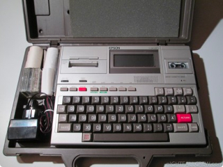

Blog
-
Dropbox Seeks to Work with Hard Drive Users
April 28, 2016In the realm of data storage, there seems to be an important war playing out between cloud […]

-
The First Portable Computer
April 24, 2016For the past few decades, portability has become an increasingly important factor when it comes to purchasing […]

-
The History of Intel
April 14, 2016As it currently stands, Intel is one of the most powerful and influential tech companies to ever […]

-
Is the G-Tech G-Drive EV ATC for you?
April 04, 2016Recently rated at four out of five stars by CNET, the G-Tech G-Drive EV ATC with Thunderbolt […]

-
Google Predicts a Change in Hard Drive Priorities
March 24, 2016Although it’s pretty widely accepted that a failed hard drive can be a horribly stressful issue, higher-ups […]

-
6 Ways to Destroy Your Hard Drive
March 18, 2016Looking to destroy a hard drive filled with sensitive data? Considering data breaches have become an increasingly […]

-
Use Terminal to Back Up iPhones to External Storage
March 11, 2016As smartphones increase in storage capacity, users are coming up against a somewhat unprecedented problem. High storage […]

-
5 Times Data Recovery Brought Criminals to Justice
March 04, 2016Data recovery isn’t just helpful for IT companies and private users; law enforcement officials have consistently sought […]

-
Which Hard Drive Brand Is the Most Reliable?
February 23, 2016Considering your priceless memories and career-enabling information can be stored on a single drive, you can probably […]

-
How to Upload HD Videos to Facebook
February 18, 2016Whether they work for NASA, National Geographic or Netflix, a lot of people make their living off of their […]

-
Did you know your iPhone tracks you? Learn how to stop it
February 17, 2016Privacy is consistently pushed to the wayside by the forward surge of our internet era, and some […]

-
How Long Can You Really Expect Your Storage Drive to Last?
February 15, 2016Unfortunately for our customers, all storage drives fail at some point. Any drive you use without a […]

-
Drive or Cloud Storage; What Works for You?
January 29, 2016If you’re reading this blog, you’re probably aware that there’s value in protecting and preserving your precious […]

-
The 5 Most Outrageous Cases of Data Loss Ever
January 07, 2016If you’re reading this, it’s likely you’ve experienced the pain of data loss. You’re not alone; despite […]

-
How to Find a Data Recovery Company that will Actually Recover Your Data
December 03, 2015Regardless of what kind of data recovery you need, it’s imperative that you find a data recovery […]

-
Stop Freezing Your Hard Drives!
December 12, 2014We understand how anxiety-inducing a failed hard drive can be. Most people turn to the almighty […]

-
What is a RAID System and Do You Need One?
December 08, 2014After hard drive failure, the question we receive more often than not is: “How can I […]

-
Ease of Access: Cloud Storage
November 11, 2014It’s a dilemma that many come across: You know that you need to back up your […]

-
Starbucks
November 03, 2014“Their staff was really helpful and professional. We have been very pleased with the service received from […]

-
Insomniac Events
November 02, 2014“If we have any other data recovery needs in the future, we will not hesitate to contact […]

-
Cineflix Productions
November 02, 2014“Within 24 hours we learned that our footage had been recovered and that the project would live […]

-
Gurney Productions
November 02, 2014“Platinum Data Recovery should be an immediate go-to for any production company seeking to recover lost data”

-
Levin ~ Morris
November 01, 2014“…it would be a serious understatement to say that their recovery is an enormous relief and well […]

-
Arsenal FX
October 31, 2014“The data we thought would be unrecoverable proved to be no difficult task for your crack team. […]

-
Hud:sun Media
October 30, 2014“I will recommend using this service anytime you are in an unfortunate bind and need a data […]

-
Automobile Club of Southern California
October 30, 2014“From my initial consultation with Sam through final delivery, I felt that my data was in good […]

-
Energy Research Laboratory US Santa Barbara
October 29, 2014“I appreciate that [I] was contacted by phone an hour after I submitted my electronic quote request… […]

-
California Dental Association
October 27, 2014“They exceeded my expectations… Thanks to everyone at Platinum Data Recovery – I couldn’t recommend them more.”

-
Contract Services Administration Trust Fund
October 04, 2014“…I am impressed by the timeliness and skill you demonstrated while recovering our data. I would recommend […]

-
Los Angeles County
September 29, 2014“Platinum Data Recovery saved countless scanned documents. The full gamut; taxes, diplomas, certificates and more. Platinum Data […]
-
Backup 101
August 13, 2014Backing up our computer data is something we all know that we need to do, but do […]

-
Demystifying Internal Hard Drives
July 25, 2014In the first few days of owning a new computer, running out of storage space is one […]

-
External Hard Drives: Which One is Right for You?
July 25, 2014External Hard Drives: Which One is Right for You? As we advance further into the digital age, […]

-
Savitsky, Satin & Bacon Co.
July 12, 2014“From the first time I spoke with the staff I knew I was dealing with professionals who […]

-
Robin Haim
July 12, 2014“The people at Platinum Data Recovery were very professional, and pleasant to work with. I would highly […]

-
The Law Office of Patrick N. Bailey, P.A.
July 12, 2014“I know I made your job more difficult by trying to fix my drive at home and […]

-
Starfire Auto
July 12, 2014“Ultimately, we came across Platinum Data Recovery, and from start to finish, we must admit that the […]

-
Why Choose Data Recovery Experts?
July 28, 2013It is a known fact that data recovery companies offer a wide range data recovery services. From […]

-
Data Recovery Services for Businesses
January 27, 2012Data recovery services for businesses are a critical need in the event of hard drive failure or […]

-
Understanding Data Recovery Software
May 24, 2011Understanding Data Recovery Programs Data recovery programs are becoming an unfortunate part of our get-rich-and-fix-anything-quick internet-based society. […]

-

The First Portable Computer
April 24, 2016 For the past few decades, portability has become an increasingly important factor when it comes to purchasing... -
6 Ways to Destroy Your Hard Drive
April 24, 2016 Looking to destroy a hard drive filled with sensitive data? Considering data breaches have become an increasingly prevalent... -
How Long Can You Really Expect Your Storage Drive to Last?
April 24, 2016 Looking to destroy a hard drive filled with sensitive data? Considering data breaches have become an increasingly prevalent...